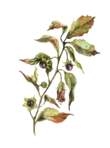
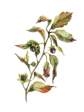

Kontakt
Porozmawiajmy
Spółdzielnia Socjalna Perunica, ul. Dworcowa 7, 46-220 Byczyna, NIP: 751-177-32-15, REGON: 161576666
E-mail: olaarkona@gmail.com, aniaarkona@gmail.com Telefon (8-16): +48 785 207 065
Jesteśmy w social mediach!
 
